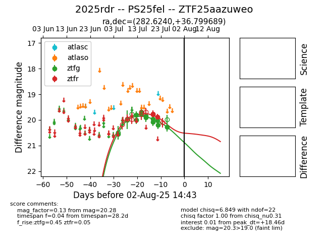

Target 2025rdr at 2025-08-02 14:43, see:
FINK: fink-portal.org/2025rdr
Lasair: lasair-ztf.lsst.ac.uk/objects/2025rdr
ALeRCE: alerce.online/object/2025rdr
TNS: wis-tns.org/object/2025rdr
YSE: ziggy.ucolick.org/yse/transient_detail/2025rdr
alt names
ZTF25aazuweo (ztf,fink)
2025rdr (tns,yse)
PS25fel (panstarrs)
coordinates:
equatorial (ra, dec) = (282.6240,+36.79969)
galactic (l, b) = (66.5129,+16.02592)
photometry
last ztfg=20.28, ztfr=19.89
12 ztfg, 2 ztfr detections
